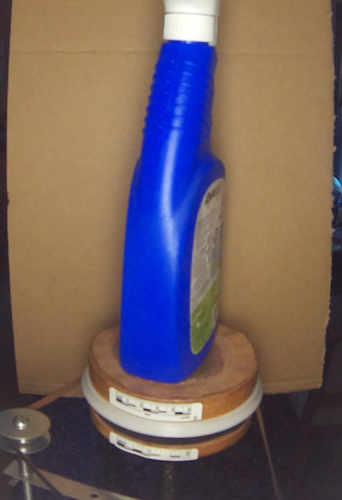

Plant Imaging Rig
A single fixed camera photographs a subject on a motorised turntable. A second camera reads a ruler on the platter rim, so the platter’s position can be measured rather than assumed. These are the most recent frames from both.
SubjectIMX477, cropped to the backdrop

PositionUSB camera, cropped to the rim scale

View the 3D model → — carved from 36 turntable photographs